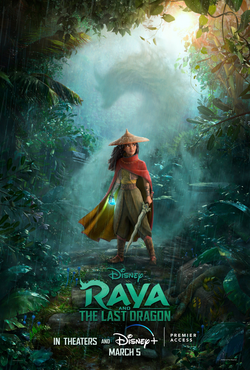

Os croods 2
Sinopse
Em busca de um habitat mais seguro, a família pré-histórica Crood descobre um paraíso isolado que atende a todas as suas necessidades. Infelizmente, eles também devem aprender a viver com os Bettermans, uma família que está alguns degraus acima dos Croods na escada evolutiva. À medida que as tensões entre os novos vizinhos começam a aumentar, uma nova ameaça logo impulsiona os dois clãs em uma aventura épica que os força a abraçar suas diferenças e se fortalecerem e sobreviverem juntos.
Assista o trailer aqui
Raya e o último dragão

Sinopse
Há muito tempo, no mundo de fantasia de Kumandra, humanos e dragões viviam juntos em harmonia. Mas quando uma força maligna ameaçou a terra, os dragões se sacrificaram para salvar a humanidade. Agora, 500 anos depois, o mesmo mal voltou e cabe a uma guerreira solitária, Raya, rastrear o lendário último dragão para restaurar a terra despedaçada e seu povo dividido.
Assista o trailer aqui